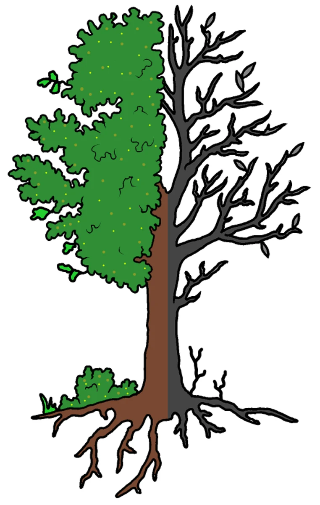

Darm
ALLGEMEIN: Gesundheit beginnt im Darm. (Paracelsus). Der Tod sitzt im Darm (Hippokrates). Darm gesund, kerngesund. Er ist die „Wurzel des Menschen“. Wenn die Wurzeln eines Baumes durch Pflastersteine oder Widerstände im Boden eingeengt werden, so dass er kaum noch Wasser und Nahrung bekommt, wirkt sich das über kurz oder lang auf Stamm, Krone/Geäst negativ aus. Der Baum verliert die Blätter, stirbt allmählich ab. Was die Wurzeln für den Baum, ist der Darm für unseren Körper. Er verfügt über unglaublich viele Nervenzellen und spielt eine entscheidende Rolle bei der Entwicklung von Abwehrkräften.

Der Darm ist das größte Immunorgan des Körpers. 80 % aller Abwehrzellen sind im Darmbereich tätig. Hier liegen auch die meisten Lymphknoten und das nicht ohne Grund: Der Darm ist die größte Berührungsfläche des Körpers mit der Umwelt. Hier können die meisten Schadstoffe in den Organismus übertreten. Die Haut bietet der Umwelt 2 Quadratmeter Kontaktfläche, die Lunge mit ihren vielen Verästelungen hat eine Oberfläche von etwa 80 Quadratmetern, beim Darm sind es jedoch - würde man ihn innen glätten können - rund 3-400 Quadratmeter, so viel wie ein Tennisplatz. Der Darm wird auch als zweites Gehirn im Bauch bezeichnet. Er verfügt über unglaublich viele Nervenzellen und spielt eine entscheidende Rolle bei der Entwicklung von Abwehrkräften. 100 Billionen Darmkeime produzieren Hormone und Botenstoffe, die für Glücksgefühle sorgen. So profiliert nicht nur der Körper von einer gesunden Darmflora, sondern auch die Psyche. Der Darm nährt das Gehirn. Bei allen neurologischen Erkrankungen (z.B. Alzheimer, MS, Parkinson) ist der Darm beteiligt. Besonders die Propionsäure spielt hier eine wichtige Rolle. Sie stärkt unser Immunsystem. 2 x täglich 1 Kapsel Propicum® (PZN 11527124) einnehmen. Propionsäure wird von körpereigenen Bakterien - aus vorwiegend pflanzlichen Ballaststoffen - hergestellt und sorgt so für die Vermehrung guter Bakterien. Die Bedeutung unserer Darmflora: Unser ganzer Darm ist mit über 30 Billionen Mikroorganismen (Kleinstlebewesen, vor allem Bakterien) besiedelt, mehr als der Körper Zellen hat. Die Gesamtheit dieser Mikroorganismen in unserem Verdauungstrakt wird als „Darmflora bzw. Darm-Mikrobiom“ bezeichnet und bildet die Grundlage für unser Wohlbefinden. Es gibt den Ausschlag, ob wir gesund sind oder krank werden. Es hält unseren Körper im Gleichgewicht und reagiert außerordentlich empfindlich auf äußere Einflüsse. Faszination Mikrobiom: Billionen guter Keime schützen nicht nur den Darm, sondern unseren gesamten Körper. Wenn wir jedoch mit unserer Nahrung Antibiotika aufnehmen, fügen wir unserem Darm-Mikrobiom Schaden zu, denn Antibiotika tötet nicht nur schädliche, sondern auch gute Bakterien. Auch Glyphosat/Herbizid (siehe Einleitung) ist ein Breitband-Antibiotikum und schädigt unser Darm-Mikrobiom, denn es ist mit dem Mikrobiom im Boden vergleichbar. Beide haben die gleiche Funktion. Spuren dieses giftigen Chemie-Cocktails finden sich heute in vielen Getreideprodukten. Unsere Lebensmittel sind daher oft „vergiftet“ und wir essen sie. Dadurch reduziert sich die Bakterienvielfalt unseres Darm-Mikrobioms so weit, dass eines schönen Tages ein Organ nicht mehr so funktioniert, wie es soll und wir chronisch krank werden. Anmerkung: Die Bedeutung des biologischen Landbaus wird hierdurch überdeutlich.
URSACHEN: Im Darm findet die Resorption der Nährstoffe statt. Wenn jedoch die nützlichen Darmbakterien durch zu viel Wachstumsförderer in tierischen Nahrungsmitteln (Fleisch, Fisch etc.) oder ständige Antibiotikagaben geschwächt werden, so kommt es unweigerlich zu schweren Erkrankungen (Mineralstoffmangel, Immunschwäche, Hauterkrankungen, Allergien etc.). Amalgam (Zähnen) schwächt unser Immunsystem, so dass sich der Darmpilz (Candida albicans) leicht ausbreiten kann. Aber auch eine Histamin-Intoleranz (siehe Allergie), Verstopfung, starke psychische Belastung, Konservierungsstoffe und Nebenwirkungen von Medikamenten spielen hier eine Rolle. Süßstoffe greifen unsere Darmflora an und können sie negativ verändern. VitaminD3-Mangel bei allen Darmerkrankungen (Arzt befragen). Spülmittelrückstände am Geschirr (mit fließendem Wasser abspülen) setzen die Oberflächenspannung des Wassers herab, wodurch die Darmschleimhaut für Substanzen geöffnet wird, die aber keinesfalls ins Blut übertreten sollten. Es wird vermutet, dass dadurch der Anstieg der Neutralfette (Triglyceride) im Blut herrührt, was die Herzinfarktquote erhöht. Eine gesunde Darmschleimhaut nimmt keine Allergene auf, da diese durch das in der Schleimhaut befindliche Immunsystem sofort zerstört werden. Beim Leaky GutSyndrom (Sickerdarm) unter anderem verursacht durch „Chronisch stille Entzündungen,“ die Einnahme von bestimmten Medikamenten (Schmerzmittel, Kortison, Antibiotika und Säureblocker) können Allergene ungehindert die Darmwand durchdringen und so eine Allergie bzw. Nahrungsmittel-Unverträglichkeit auslösen. Weizen unbedingt meiden! (siehe Allergie/Glutenunverträglichkeit). Zu den Anzeichen einer gestörten Darmflora gehören Blähungen, Verstopfung, Durchfall, Reizdarm, Übelkeit, Krämpfe im Bauch, Nahrungsmittelunverträglichkeiten, wie z.B. Laktoseintoleranz, Allergien, Fruktoseintoleranz, Glutenunverträglichkeit, Infektanfälligkeit.
Was dem Darm gut tut
ERNÄHRUNG: Die Ernährung kann die Zusammensetzung der Mikroben im Darm verändern, zum Positiven, aber auch zum Negativen. Vor allem süßes, fettes und salziges Essen läßt die Darmflora verkümmern, schädliche Bakterien nehmen überhand und der Stoffwechsel leidet darunter. Fasten (Schonung), Obst, Gemüse, Salat, Knoblauch/Bärlauch, Kartoffeln, Möhren, Naturreis, Grünkohl, Gurken, Fenchel, Blütenpollen, Hirse, Maroni, Meerrettich, Pfeffer, Zimt, Kresse, Ingwer, Thymian, Oregano, Majoran. Kurkuma wirkt sich positiv stabilisierend auf chronisch stille Darmerkrankungen aus.
- Paprika fördert die Darmtätigkeit und Beweglichkeit der Darmzotten.
- Brokkoli aktiviert die Abwehr.
- Dinkel sollte die Grundlage für die Behandlung aller Darmerkrankungen sein (Hildegard von Bingen).
- Rohes Sauerkraut ist ein wahrer Magen- und Darmbesen (täglich 1 Gabel).
- Leinsamen (1 Esslöffel täglich) schützt die Darmschleimhaut.
- Haferflocken/Kleie wirken normalisierend auf den Darm.
- Die Zwiebel ist ein natürliches Antibiotikum. Bakterien, die kleinen aber unangenehmen Störsender im Darm und Organismus, werden vom ätherischen Öl der Zwiebel weggefegt.
- Joghurtbakterien (Joghurt/Kefir) vernichten Fäulniserreger im Darm.
- Möhren (2-3) reiben, mit etwas Sahne/Öl versetzt, essen. Sie treiben alles aus dem Darm heraus, was nicht hineingehört.
- Heidelbeeren bringen den Darm auf Trab und Flohsamen bringen den Darm ins Lot.
- Omega-3-Fettsäuren: (siehe Öle/Fette) Fisch, täglich 100 g halbiert das Erkrankungsrisiko. Morgens nüchtern 1 Teelöffel Leinöl (pflanzliches Cortison) einnehmen, bei allen Entzündungen im Magen-Darm-Trakt.
- Viel Honig essen, wirkt antiseptisch.
Diese natürlichen Lebensmittel/Gewürze bauen die geschwächte Darmflora wieder auf, stärken das Immunsystem. Nahrung stets gut kauen, alles, was wenig gekaut werden muss, verlässt den Körper nur sehr schwer und umgekehrt (weich rein, hart raus).
Gut gekaut ist halb verdaut
Gut einspeicheln. Der Speichel ist das beste Heilmittel für den Magen/Darm. Allgemein essen wir aber zu schnell, zu viel, zu oft und abends zu spät. Gegen Abend nimmt die Verdauungsaktivität ab, so dass man auf Essen nach 19:00 Uhr verzichten sollte. Die Chinesen sagen: Schenke das Abendessen deinen Feinden.
MEIDEN: Tierisches Eiweiß (Fleisch, Wurst - Omega-6-FS (siehe Öle/Fette), Fett und Weizen reduzieren. Milch/Milchprodukte (außer Butter/Sahne) mit Obst und Zucker (Fruchtjoghurt) meiden. Zusammen eingenommen bilden sie Gärung/Alkohol/Säure. Zucker- und Salzkonsum einschränken. Kaffee, Cola, Schokolade, Alkohol.
GETRÄNKE: Trinken regt die Darmtätigkeit an. Abbauprodukte und Gifte werden schneller aus dem Körper transportiert und können somit weniger Schaden anrichten. Heilkräuter gegen Darmbeschwerden/FKKK-Tee: Fenchel. Kamille. Kümmel, Koriander. Wermut, gelber Enzian, Tausendgüldenkraut, Anis, Salbei. Molke Trinkkur: Täglich 1-1,5 Liter Diätmolke oder 1 Teelöffel Lactisol einnehmen. Viel Kefir trinken (14 Tage à ½ Liter). Leinsamen: 3 Esslöffel in ½ Liter kochendes Wasser geben, 5 Minuten ziehen lassen, absieben. Dieser Tee enthält viel darmheilendes Vitamin F. Viel trinken (Stilles Wasser oder Tee), damit die Ballaststoffe auch quellen können. Ingwertee (5 Minuten ziehen lassen) löst Verspannungen. Pflanzensäfte (Schoeneberger) erhältlich im Reformhaus: Artischocken, Schafgarbe, Löwenzahn, Sauerkraut, Knoblauch/Bärlauch, Fenchel sowie Heidelbeer-Muttersaft. Sonstiges: Viel körperliche Bewegung (Wandern, Gymnastik). Bewegung ist für den Darm genau so wichtig, wie gründlich kauen. Wechselduschen, Bauchmassage. Sie aktiviert die Darmfunktion, kostet kein Geld und nur wenig Zeit und der gesundheitlichen Nutzen ist dafür enorm. Einläufe mit natürlicher Kernseife sind ein altbewährtes Naturheilmittel bei vielen Darmerkrankungen, von der Blutung bis zu Hämorrhoiden. Kümmelöl-Auflagen/Bauch.
MEDIKAMENTE: Luvos® Heilerde magenfein Granulat wirkt entzündungshemmend, desinfizierend, saugt Gase und Giftstoffe auf, ebenso Kaffeekohle (Carbo Königsfeld), MYRRHINIL-INTEST® Tabletten bei entzündlichen und infektiösen Darmerkrankungen. Carmenthin® Kapseln (Pfefferminz-Kümmelöl). Vitamin D3 plus K2, Arzt/HP befragen. Chlorella Süßwasseralgen (z.B. Nepro Rella®) enthalten viele Ballaststoffe und Chlorophyll (grüner Pflanzenfarbstoff). Sie helfen die Darmtätigkeit zu regulieren. Mutaflor® Kapseln zur Sanierung der Darmflora nach Antibiotikabehandlung. INNOVALL® AID Portionsbeutel für Darmaufbau und Darmsanierung.
Morbus Crohn
URSACHEN: Wissenschaftler machen Hefe- und Pilzgifte im Getreide, sogenannte Mykotoxine, sowie Aflatoxine des Schimmelpilzes Aspergillus dafür verantwortlich. Chronisch stille Entzündungen. SYMPTOME: Morbus Crohn ist eine Autoimmunerkrankung und verläuft meist in Schüben, wobei - im Gegensatz zu Colitis ulcerosa - der gesamte Verdauungstrakt vom Mund bis zum After vom entzündlichen Geschehen betroffen ist. Vor allem im Bereich des rechten unteren Bauchraumes kann es immer wieder zu schmerzhaften Krämpfen kommen. Die Entzündungsparameter sind erhöht, oft tritt auch eine perniziöse Anämie, verursacht durch Vitamin B12-Mangel auf, der wiederum durch einen Vitamin D-Mangel verursacht wird (siehe. Darmkrebs). Therapie: Täglich 1 Esslöffel Apfelessig in einem Glas Wasser möglichst nüchtern trinken, löst den Darmpilz an der Darmwand und zerstört Bakterien in den Verdauungsorganen. Die Emulgatoren E466 (Natriumsalz) und E433 (Sorbit) sind besonders schädlich.Weizen meiden.
Colitis Ulcerosa
SYMPTOME: : Sie ist eine chronische Entzündung, die ausschließlich im Dickdarm stattfindet und mit Geschwürbildung einhergeht. Blutige Durchfälle sind das häufigste Symptom, verbunden mit krampfartigen Schmerzen im linken Unterbauch, Übelkeit, Appetitlosigkeit, Fieber und Gewichtsverlust. Hinweis: Bei Patienten mit vorgenannten chronisch entzündlichen Darmerkrankungen liegen häufiger Nierensteine vor als bei Gesunden (Arzt befragen). Auch Mykosen/Schwermetallbelastungen, sowie Stress, Vitamin D3- und K2-, Eisen- oder Zinkmangel spielen hier eine wichtige Rolle. Rauchen meiden. Männer, die unter vorgenannten Krankheiten leiden, haben ein um das 4-5 fach erhöhte Risiko, an Prostatakrebs zu erkranken. Dies ergaben aktuelle Untersuchungen amerikanischer Wissenschaftler.
MEDIKAMENTE: Indische Weihrauch Kapseln (Beratung/Bezug), wirken wie Cortison, jedoch ohne Nebenwirkungen. Traumeel® S Tabletten. Spenglersan® Kolloid G (3 x täglich 10 Sprühstöße in die Bauchhaut einreiben und 3 x täglich 10 Sprühstöße in ½ Glas Wasser vor dem Essen einnehmen). Bei beiden Erkrankungen hat sich die Einnahme von Hericium und Reishi Heilpilzen (Kapseln) bewährt - Bezug s. Anhang. Rechtsregulat® BIO Dr. Niedermaier. Info: www.gesundheitsinformation.de
Divertikel
ALLGEMEIN: Diese Ausstülpung der Darmwand mit bläschenartiger Verwölbung an der äußeren Darmoberfläche - meist am S-förmigen Teil des Dickdarms im linken Unterbauch - findet man bei vielen, meist älteren Patienten und verursacht kaum Beschwerden. Bei etwa jedem 5. Patienten kommt es jedoch infolge bakterieller Entzündung zu heftigen Schmerzen, verbunden mit dem Risiko eines Darm-Durchbruchs sowie von Krebs (Arzt befragen). Antibiotika machen auf Dauer die Darmflora kaputt und fördern eine Entzündung der Divertikel (SWR- die Ernährungs-Docs vom 27.5.2019)
URSACHEN: Infektiöse Darmerkrankung, plötzliche Muskelkontraktionen, Spannungszustände. Campylobacter Bakterien. Alles, was mit rohem Fleisch oder Hähnchen in Kontakt war, gut abwaschen und bei 60 °C in die Spülmaschine geben. Spüllappen wegwerfen. Alter oder genetische Veranlagung. Chronische Verstopfung durch ballaststoffarme Ernährung, die zudem zu viel Fett und Zucker enthält, Bewegungs- und Flüssigkeitsmangel.
ERNÄHRUNG: Langsam essen, gründlich kauen! Ein zu hoher Druck durch eine ballaststoffreiche Ernährung mit Obst, Gemüse (Brokkoli), Grünkohl, Salat, Meerrettich, Pfeffer. Zu den Mahlzeiten 1-2 Esslöffel geschroteten Leinsamen (Leinöl) mit viel Flüssigkeit einnehmen. Reduzieren: Kaffee, Milch, Süßigkeiten. Körner und Samen auf Brot und Brötchen können sich in den Divertikeln festsetzen.
GETRÄNKE: Fenchel, Kamille, Ringelblume. Viel trinken (Weißkohl-, Heidelbeersaft, Kefir, Wasser).
MEDIKAMENTE: Flohsamen z.B. Mucofalk® Apfel Granulat, reichlich nachtrinken. Spenglersan® Kolloid G (2 x vormittags) und Kolloid K (2 x nachmittags) im Abstand von 2 Stunden je 5-10 Sprühstöße in die Bauchhaut einreiben. Paidoflor® Kautabletten zur Sanierung der Darmflora. Innovall® SUD Kapseln, Myrrhinil-Intest® Tabletten.
Reizdarm-Syndrom
ALLGEMEIN: Von einem „Colon irritable“ spricht man, wenn über 12 Monate Bauchschmerzen und Verdauungsunregelmäßigkeiten bestehen, die Untersuchungen beim Arzt jedoch keinen krankhaften Befund ergeben. (Chamäleon). Die Diagnose zu stellen, ist selbst für Spezialisten eine große Herausforderung. Im Grunde genommen ist der Reizdarm nämlich die letzte Option, wenn alle anderen Ursachen für Darmprobleme ausgeschlossen werden können.
URSACHEN: Ungesunder Lebensrhythmus und falsche Ernährung (zu viel Eiweiß). Seelische Faktoren (Angst, Stress). Unser Gehirn ist mit dem Verdauungstrakt über den Vagus – Nerv und die Blutbahn eng verknüpft und in ständigem Informationsaustausch. Bei emotionalem Stress, Trauer oder Ärger sendet das Gehirn die Information sofort an den Darm. Zudem spürt dieser den Stress auch unmittelbar, denn die Darmschleimhaut hat ein hoch empfindliches Nervensystem. Im Volksmund beschreibt man dies „als auf den Magen geschlagen.“ Die Forschung legt nahe, dass Stress auch das so genannte Mikrobiom im Darm verändert. Eine mögliche Folge – das Reizdarm Syndrom. Geht es dem Darm schlecht, sendet er die Information an das Gehirn und umgekehrt genauso. So beeinflussen sich Darm und Gehirn gegenseitig (Prof. Dr. Andreas Stingel, Uniklinik Tübingen). Geht’s dem Bauch gut, ist auch die Seele viel entspannter. Die Erklärung: Darm und Gehirn kommunizieren immer miteinander, sogenannte Darm-Hirn-Achse. Normalerweise ist der Darm von vielen nützlichen Bakterien besiedelt. Die Vielzahl aller Mikroorganismen im Darm nennt man Mikrobiom. Doch das kann unter anderem durch die Gabe von Antibiotika aus dem Gleichgewicht geraten, denn diese greifen auch die nützlichen Bakterien an. Die Folge: Schädliche Bakterien wie die Chlostridien können sich ungehindert ausbreiten und Entzündungen verursachen. Sie entwickeln ständig neue Sporen, was sie gegen Antibiotika resistent macht. Das Paradoxe an einer Chlostridien Infektion ist, dass die Infektion selbst häufig die Folge einer antibiotischen Therapie ist. Daher hat man auch diese Infektion mit Antibiotika behandelt, eine Art Teufelskreis. Um ihn zu durchbrechen, behandelt Prof. Dr. Konturek/Thüringen, Klinik - Saalfeld seine Patienten mit einer modernen Methode, der sogenannten fäkalen mikrobiellen Transplantation (Stuhltransplantation). Während einer Darmspiegelung wird aufbereiteter Stuhl eines gesunden Spenders in den Darm des Kranken transplantiert. Durch das vielfältige Mikrobiom des Spenders kann sich die Darmflora des Patienten erholen. Nützliche Bakterien verdrängen die Chlostridien. Deshalb ist diese Methode auch viel, viel wirksamer als Antibiotika. Die Erfolgsrate liegt zwischen 85-90 % (MDR vom 04.10.2018 - Hauptsache Gesund). Die Universität Graz/Österreich ist hier führend. Aber auch zu viel Alkohol, Nikotin, Koffein, Infektionen, Darmpilz (Candida albicans), Mageninfektion (Helicobacter pylori), Mangel an Magensäure. Gallenstörung, Schwäche der Bauchspeicheldrüse, Laktose-, Fruktose- und Histaminintoleranz, sowie einer Gluten-Unverträglichkeit (siehe Allergie). Zöliakie, Übersäuerung (siehe Entsäuerung), Wirbelsäule überprüfen lassen (siehe Dorn). Chronisch stille Entzündungen. Man vermutet bestimmte Proteine des Weizens, die Amylase-Trypsin-Inhibitoren (ATI), die vorwiegend in neueren Weizensorten, wie Zwergweizen, vorkommen. Sie schützen die Pflanze vor Schädlingsfrass, können aber unser Immunsystem nachteilig beeinflussen (siehe Allergie). (Prof. Schuppan, Uni Mainz).
SYMPTOME: Bauchkrämpfe, Durchfall und Verstopfung oft im Wechsel, Blähungen, Völlegefühl, Übelkeit, Rückenschmerzen, Migräne, Unruhezustände, Niedergeschlagenheit und Panikattacken. Rasche Ermüdbarkeit, Schlafstörungen, Herzrasen, Kloßgefühl im Hals. Typisch ist, dass sich die Symptome nach dem Toilettengang verbessern und in der Nacht nicht auftreten.
ERNÄHRUNG: Kartoffeln, Möhren, Obst, Gemüse. Bitterstoffe statt Pillen: Artischocken, Enzian, Löwenzahn, Wermut, Ingwer, Kurkuma und Nelken, Leinöl (Omega-3-FS).
MEIDEN:Weizenprodukte (siehe Allergie/Gluten-Unverträglichkeit), alle FODMAP’s, diese schnell vergärenden und blähenden Nahrungsmittel für mindestens 6 Wochen meiden. Dazu gehören: Bestimmte Zuckerarten, die von empfindlichen Menschen nur schlecht verdaut werden können, (Prof. Schuppan, Uni Mainz). Viele FODMAP’s enthalten auch Brote, die schnell und ohne lange Gehzeit gebacken werden, sogenannte Industrie-Brote. Übeltäter sind sogenannte Amylase-Trypsin-Inhibitoren (ATI, siehe vor). Es sind Proteine, die in jeder Pflanze, insbesondere in glutenhaltigen vorkommen. Sie fördern entzündliche Prozesse. Hohe ATI-Gehalte kommen insbesondere bei hohen Stickstoffgaben und Einsatz von Pestiziden vor. Empfehlenswerte Literatur: Reizarme Ernährung (Prof. Dr. Martin Storr) DigestaVerlag: ISBN 978-3-98205552-0-6 Zusatz-, Konservierungsstoffe, Antioxidationsmittel und Geschmacksverstärker (Glutamat, E621). Häufig liegt auch eine Unverträglichkeit von Laktose-, Fruktose- oder Zuckeraustauschstoffen (Sorbit, Xylit) vor. Vorsicht auch bei Schweine-, Rind-, Lammfleisch, Fisch, Käse, Schokolade, Rotwein, Soja, Zwiebeln, Lauch, Bohnen, Erbsen, Artischocken, Spargel, Kleie.
MEDIKAMENTE: Luvos® Heilerde magenfein Granulat, Pfefferminzöl Kapseln/Apotheke, Flohsamen (Mucofalk® Apfel Granulat - reichlich nachtrinken). Myrrhinil-Intest® Tabletten, Mutaflor® Kapseln, Basentabs pH-balance Pascoe® (zur Entsäuerung). Innovall® RDS Kapseln, Iberogast® ADVANCE Tropfen.
Darmkrebs
ALLGEMEIN: Ist eine Wucherung von bösartigen Zellen im Dick- oder Enddarm. Sie fühlen sich großartig, haben Appetit und ... Darmkrebs. So hat die amerikanische Krebsgesellschaft die Bevölkerung aufgerüttelt, die Vorsorge besser zu nutzen. Denn Darmkrebs ist eine schleichende Erkrankung. und die zweithäufigste Todesursache in Deutschland. Der Krebs hat im Darm viel Platz und macht im frühen Stadium keine Beschwerden. Meist entsteht er aus Polypen, die viele Jahre zunächst gutartig sein können und später zu Krebs entarten. Bei einer Darmspiegelung lassen sich diese Polypen schmerzlos abtragen. Hinweis: Vor diesem Eingriff Pfefferminzöl Kapseln oder - Tropfen einnehmen. Sie entspannen allgemein die Muskulatur im Magen- Darmtrakt und verhindern dadurch schmerzhafte Krämpfe. Als Nebenwirkung kann es allerdings zu Sodbrennen kommen.
URSACHEN: Chronische Darmentzündungen, bestimmte vererbbare Darmerkrankungen sind ein hohes Risiko für Darmkrebs. Aber auch eine fettreiche, faserarme Ernährung, rotes Fleisch, Bewegungsmangel. Um 40 % vermindert sich das Darmkrebsrisiko für Frauen, die mehr als 4 Stunden pro Woche Sport treiben. Darauf weist die Deutsche Krebsgesellschaft hin. Übergewicht und Rauchen erhöhen das Krankheitsrisiko.
SYMPTOME: Abrupt sich ändernde Stuhlgewohnheiten, Wechsel zwischen Durchfall und Verstopfung, Darmkrämpfe, ungewollter Abgang von Stuhl bei Blähungen, Blutbeimengungen im Stuhl können Hinweise auf Darmkrebs sein und müssen weiter untersucht werden.
ERNÄHRUNG: Ballaststoffreiche Kost bei mehr vegetarisch betonter Ernährung. Rund 60 % aller Darmkrebserkrankungen sollen nach einer Untersuchung des Robert-Koch-Instituts ernährungsbedingt sein. Omega-3-FS (siehe Öle/Fette) senken das Erkrankungsrisiko. Mit Kurkuma würzen bzw. Curcuma + Pfeffer Kapseln (Beratung/Bezug).
MEIDEN: Fertignahrung, Genussmittel, Omega-6-FS reduzieren (siehe Öle/Fette). Hinweis: Vitamin D hemmt das Wachstum von Tumoren. Vitamin D-Spiegel im Blut bestimmen lassen. Wünschenswerte Vitamin-Konzentration > 75 ng/ml. Ernährungswissenschaftler empfehlen Krebspatienten abhängig vom Vitamin D-Spiegel eine tägliche Zufuhr von 2.000-4.000 i.E./Arzt befragen. Weitere Infos (siehe Krebs) Menschen, die hohe Vitamin D-Spiegel im Blut aufweisen, erkranken seltener an Darmkrebs. Das ergab eine große europäische Studie an mehr als 520.000 Personen aus 10 westeuropäischen Ländern. (Quelle: Gesellschaft für biologische Krebsabwehr, Heidelberg) Anmerkung: Denken Sie auch daran, zeitgleich zu Vitamin D, Magnesium einzunehmen. Entweder über den Magen-Darm-Trakt oder über die Haut als Spray. Denn viele Enzyme im Vitamin D-Stoffwechsel benötigen Magnesium. Und umgekehrt wird Vitamin D für die Magnesium-Aufnahme im Darm benötigt. Ein starker Vitamin D-Mangel ist daher immer mit einem Magnesium- sowie Vitamin B12-Mangel verbunden, Arzt/HP befragen. (siehe Morbus Crohn) Im Frühstadium ist Darmkrebs allein durch eine Operation heilbar.
Sonstige Darmerkrankungen
Blinddarmentzündung (Appendizitis): Sie beginnt meist mit plötzlichen starken Bauchschmerzen im Nabelbereich, die dann in weiterer Folge in den rechten Unterbauch ziehen. Begleitend entstehen oftmals Fieber, Appetitlosigkeit, Übelkeit und Erbrechen, Arzt benachrichtigen. Zwölffingerdarm Geschwür (Ulcus duodeni): Charakteristisch für dieses Geschwür ist der Nüchternschmerz, der plötzlich nachts oder einige Stunden nach einer Mahlzeit im mittleren Oberbauch auftritt und sich durch Essen bessert, Arzt befragen. Darmverschluss (Ileus): Der vollständige Verschluss eines Teils des Darms ist ein akuter Notfall und beginnt häufig mit Koliken und ruft im Verlauf immer stärkere Schmerzen hervor. Zusätzlich kann es zu einem Stuhlverhalten oder Erbrechen, mitunter auch von Stuhl, kommen. Hier ist sofort der Notarzt zu rufen! Tel. 112. Anmerkung: Bei allen starken Schmerzen im Bauchbereich keine Experimente machen, sondern unbedingt vom Arzt abklären lassen!